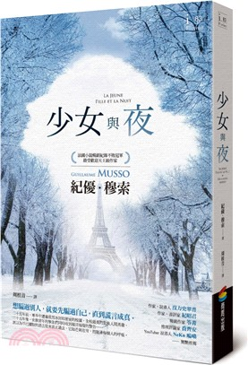
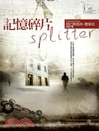
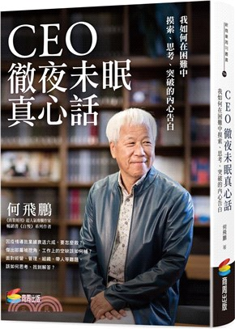
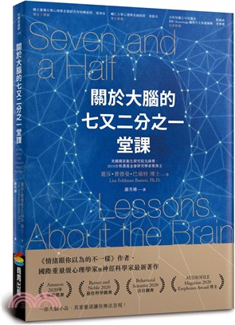

|
活用韓文慣用語（附QRcode音檔）
作者：韓國語教育研究所 出版社：EZ叢書館(日月文化) 出版日：2021/03/05 裝訂：平裝
為什麼有時明明每個單字都知道意思合起來卻看得霧煞煞……或許這正是你學習「韓文慣用語」的好時機！
★韓文的「洗耳恭聽」要怎麼說？★中文的「小睡」可以說成「瞇一下」，原來韓文也有類似的說法！★只不過
稱讚了一下韓國人，對方居然要我「別載他搭飛機」？！【本書特色】1.本書為作為《活用韓文擬聲擬態語》
的系列書，同樣以「豐富韓語表達內容」為出發 |
|
IG韓語貼文日記
作者：地方韓文水水 出版社：EZ叢書館(日月文化) 出版日：2021/08/05 裝訂：平裝
課本裡的韓文例句很死板、不夠有趣、不貼近生活？ 想寫出最韓式的IG貼文，就看這一本！ 這是一本專
為中文母語者寫的韓語學習書，作者整理出時下最大眾化的貼文主題與文字型態，讓學韓語變得更有趣、
活潑、實用！將學到的韓文真實應用在日常生活中，即使不能出國，也能透過社群軟體交到韓國朋友、表
達自我、
吸收韓文新資訊。 本書特色 【特色一】輕鬆學會韓文 |

|
全球數千萬讀者人手一本，法國小說銷售紀錄不敗冠軍 紀優．穆索
犯罪懸疑巔峰話題新作重磅回歸，個人創作生涯再突破
法國累印1,000,000冊，版權售出34國
想騙過別人，就要先騙過自己，直到謊言成真。
二十五年前，寒冬中遭暴風雪冰封如密室的校園，全校最美的女孩人間蒸發。
二十五年後，女孩當年的摯友們同時收到揚言報復的警告。
令人無法喘息的回憶拼圖，即將一片片拼起……
|
|
屢次蟬聯德國亞馬遜暢銷排行榜第一名，超過7000000本銷售數字保證，
最受台灣讀者喜愛的心理驚悚小說大師費策克再度出擊，挑戰你對未知與恐懼的極限！
為了探索真相，你願意付出怎樣的代價？
「如果那天沒有讓他獨自出門，或許他還活著……」
「我必須親眼見到兒子，哪怕是殘骸屍骨，也要眼見為憑。」
作為被害者家屬，消防員提爾因兒子失蹤，長期活在愧疚與傷痛之中。但當警方逮
住凶殘的兒童虐殺犯後，卻因為殺人犯的片面陳述，在沒有找到孩子屍骨的情況下，
以死亡結案，並判定兇手精神失常，移送精神病院。悲憤的提爾為求查個水落石出……
|

|
如果可以將生命中最悲慘的遭遇，自記憶中移除，那會如何？
如果在移除記憶的過程中出了差錯，那又會如何？
十一月的深夜裡，在暗無人煙的森林裡，馬克‧魯卡斯獨自來到
一棟木屋前，遲疑許久，然後用那隻骨折的手唯一還完好的一
根指頭，按下了門鈴。
於是，在醫生的協助下，馬克開始回憶這些日子以來所發生的一切…… |
|
你的夜晚夠「黑」嗎？
還在睡前滑手機嗎？
追劇看到精彩處，還捨不得去睡嗎？
黑暗實在太可怕，非得開小燈才睡得著嗎？
這就是導致你傷眼又傷身的原因！
我們都聽過要日作夜息、愛護眼睛，但是…… |
|
國際超級文學作家石黑一雄
2017年摘下諾貝爾文學桂冠後最新創作
在擁有強大情感力量的小說中，揭露人與世界連結的幻覺底下的深淵。
――諾貝爾文學獎授獎詞
這是一部關於人心的小說，從他方而來，對此時此地的你我切切低語。
真實與奇幻交錯的世界，終究掙脫不了人性的枷鎖。――石黑一雄 |
|
漢娜・鄂蘭Hannah Arendt
1906年10月14日出生於漢諾威，在馬堡大學和海德堡大學主修哲學和神學，
她的老師們包括海德格（Martin Heidegger）、胡塞爾（Edmund Husserl）
和雅斯培（Karl Theodor Jaspers）。
1929年，年輕的鄂蘭完成了她的博士論文《奧古斯丁愛的觀念》（Der
Liebesbegriff bei Augustin），然因德國內部的反猶政策，使她無法在德
國任何一所大學教書。1933年，在被蓋世太保短暫關押之後，鄂蘭流亡到巴黎
，結識了班雅明（Walter Benjamin）並成為好友，也開始為Youth Aliyah
（一個致力於將猶太兒童移民到巴勒斯坦的組織）工作。1937年，她在巴黎遇見
了德國詩人與哲學家布呂歇（Heinrich Blücher），兩人於1940年結婚，並於
1941年與丈夫和母親移居美國。 |

|
經營企業、帶領團隊，會遭遇各種問題
輕則影響績效成果，重則危及公司生存
苦思難題而夜不成眠時，本書提供前人的經驗以資參酌
企業營運的目的，就是要讓公司能穩定地獲利，要穩定地獲利，領導者就要學會做
生意、學會帶人用人、學會管理團隊。何飛鵬列出經營企業的七大面向，每個面向都
令領導者思考再三，遇到問題時都會在深夜輾轉難眠。然而為了企業的生存，領導
者都必須盡快學習、掌握這七個面向的工作。 |
|
從偏見、記憶、直覺等心理特質，解開不公平審判之謎
揭露人性的弱點如何帶來悲劇的、讓人撕心裂肺的不正義結局
「本書的寫作是為了解釋人類缺陷，亦即人類心理上的弱點，如何導致錯誤的有罪
判決，而今日，這個問題無論是在台灣、在阿根廷，還是在美國，都一樣無法避免。」 |

|
〈推薦專文〉培養科學素養，刻不容緩
輔仁大學心理學系副教授／黃揚名
自從人類認定腦和我們心智運作有關係以來，腦就像一個黑盒子或是說
潘朵拉的盒子一樣，大家對於這個身體部位，一直有著神祕的想像。有
不少人利用人們對於腦的運作不甚瞭解，故弄玄虛。不論是所謂的右腦
開發、大腦潛能開發、開頂成聖等等，都是如此。 |
|
真實的台灣版「與神對話」
老神總是存在的，你尋找過嗎？
生命從來不是簡單的，卻可以是容易的！
只要有一粒芥子的信心，你就可以移山。
當你看著這些文字，你的起始思維已經轉換，
於是宇宙也跟著轉了一個彎，在豁然開朗處，
真正活出光，活出愛。 |